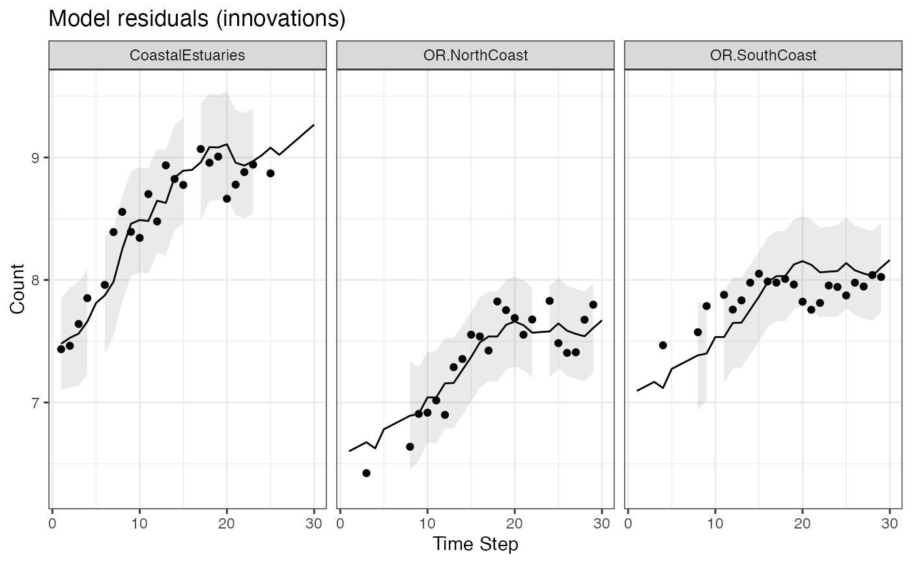
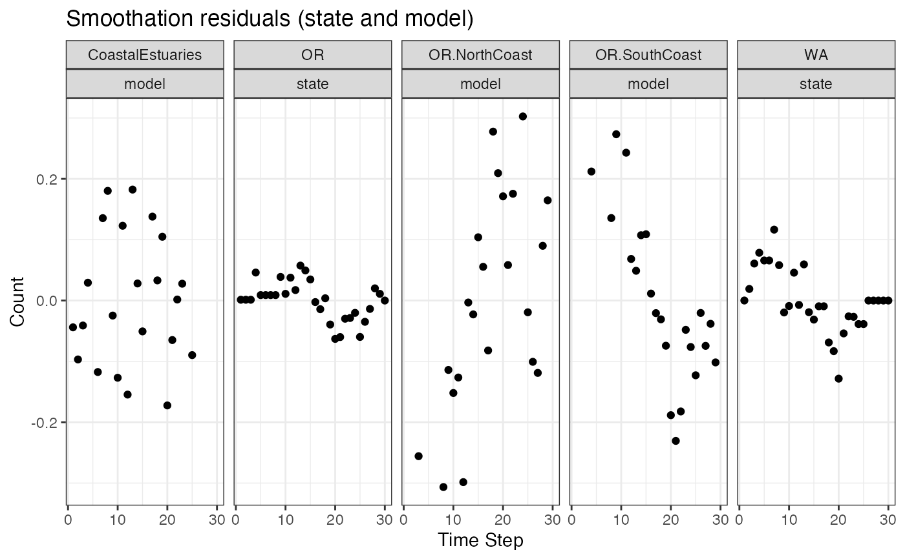
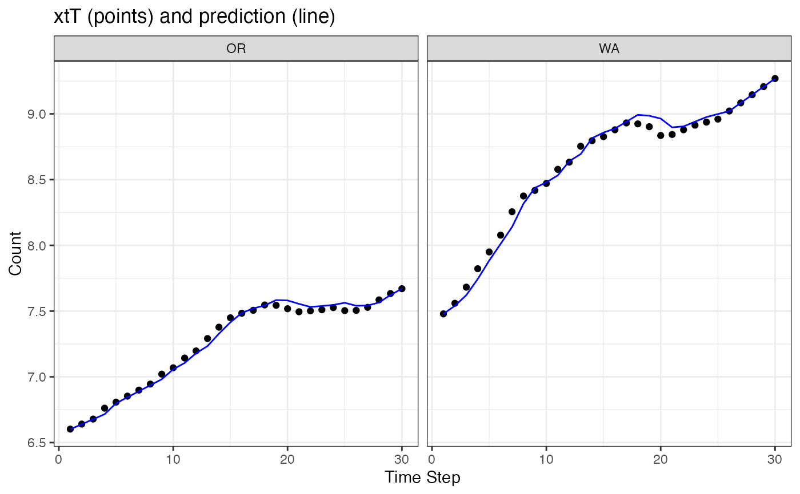

Model and state fitted values, residuals, and residual sigma
residuals_marssMLE.Rdresiduals.marssMLE returns a data frame with fitted values, residuals, residual standard deviation (sigma), and standardized residuals. A residual is the difference between the "value" of the model (\(\mathbf{y}\)) or state (\(\mathbf{x}\)) and the fitted value. At time \(t\) (in the returned data frame), the model residuals are for time \(t\). For the the state residuals, the residual is for the transition from \(t\) to \(t+1\) following the convention in Harvey, Koopman and Penzer (1998). For the the state innovation residuals, this means that state.residual[,t] is for the transition from \(t\) to \(t+1\) and is conditioned on data 1 to \(t\) while model.residual[,t] is is conditioned on data 1 to \(t-1\). State innovation residuals are not normally used while state smoothation residuals are used in trend outlier analysis. If warnings are reported, use attr(residuals(fit), "msg") to retrieve the messages.
Because the state residuals is for the transition from \(t\) to \(t+1\), this means that the state residual .resids[t] is value[t-1] minus .fitted[t-1] in the outputted data frame.
Arguments
- object
a
marssMLEobject- type
tt1means innovations residuals. The fitted values are computed conditioned on the data up to \(t-1\). Seefitted()withtype="ytt1"ortype="xtt1".tTmeans smoothation residuals. the fitted values are computed conditioned on all the data. Seefitted()withtype="ytT"ortype="xtT".ttmeans contemporaneous residuals. The fitted values are computed conditioned on the data up to \(t\). In MARSS functions, estimates at time \(t\) conditioned on data 1 to \(T\) are denotedtT, conditioned on the data from \(t=1\) to \(t-1\) are denotedtt1and conditioned on data 1 to \(t\) arett.- standardization
"Cholesky" means it is standardized by the lower triangle of the Cholesky transformation of the full variance-covariance matrix of the model and state residuals. "marginal" means that the residual is standardized by its standard deviation, i.e. the square root of the value on the diagonal of the variance-covariance matrix of the model and state residuals. "Block.Cholesky" means the model or state residuals are standardized by the lower triangle of the Cholesky transformation of only their variance-covariance matrix (not the joint model and state variance-covariance matrix).
- form
For developers. Can be ignored. If you want the function to use a different function than
residuals_form. This might be useful if you manually specified a DFA model and want to useresiduals_dfafor rotating.- clean
Can be ignored. For
type="tt1", state residuals are not used for residuals analysis and fortype="tt", they don't exist (all NA). They are used only for smoothation residuals,type="tT". Fortype="tt1"andtype="tt", the data frame is cleaned by removingname=="state"whenclean=TRUE.- ...
Not used.
Value
A data frame with the following columns:
- type
tT, tt1 or tt
- .rownames
The names of the observation rows or the state rows.
- name
model or state
- t
time step
- value
The data value if
nameequals "model" or the \(x\) estimate ifnameequals "state" at time \(t\). See details.- .fitted
Model predicted values of observations or states at time \(t\). See details.
- .resids
Model or states residuals. See details.
- .sigma
The standard error of the model or state residuals. Intervals for the residuals can be constructed from
.sigmausingqnorm(alpha/2)*.sigma + .fitted.- .std.resids
Standardized residuals. See
MARSSresidualsfor a discussion of residual standardization.
Details
See MARSSresiduals for a discussion of the residuals calculations for MARSS models.
value and .fitted
See the discussion below on the meaning of these for \(\mathbf{y}\) associated residuals (model residuals) or \(\mathbf{x}\) associated residuals (state residuals).
model residuals
The model residuals are in the data frame with name=="model".
The model residuals are the familiar type of residuals, they are the difference between the data at time \(t\) and the predicted value at time \(t\), labeled .fitted in the data frame. For the model residuals, the "value"" is the data (or NA if data are missing). If type="tT", the predicted value is the expected value of \(\mathbf{Y}\) conditioned on all the data, i.e. is computed using the smoothed estimate of \(\mathbf{x}\) at time \(t\) (xtT). If type="tt1", the predicted value is the expected value of \(\mathbf{Y}\) conditioned on the data up to time \(t-1\), i.e. is computed using the estimate of \(\mathbf{x}\) at time \(t\) conditioned on the data up to time \(t-1\) (xtt1). These are known as the one-step-ahead predictions and the residuals are known as the innovations.
The standard errors help visualize how well the model fits to the data. See fitted for a discussion of the calculation of the model predictions for the observations. The standardized smoothation residuals can be used for outlier detection. See the references in MARSSresiduals and the chapter on shock detection in the MARSS User Guide.
state residuals
The state residuals are in the data frame with name=="state".
If you want the expected value of the states and an estimate of their standard errors (for confidence intervals), then residuals() is not what you want to use. You want to use tsSmooth(..., type="xtT") to return the smoothed estimate of the state or you can find the states in the states element of the marssMLE object returned by a MARSS() call. For the one-step-ahead state estimates, use tsSmooth(..., type="xtt1").
The state residuals are only for state-space models. At time \(t\), the state residuals are the difference between the state estimate at time \(t+1\) and the predicted value of the state at time \(t+1\) given the estimate of the state at time \(t\). For smoothation state residuals, this is $$ \hat{\mathbf{w}}_{t+1} = \mathbf{x}_{t+1}^T - \mathbf{B}\mathbf{x}_{t}^T - \mathbf{u} - \mathbf{C}\mathbf{c}_{t+1}$$ For "tt1" state residuals, this is $$ \hat{\mathbf{w}}_{t+1} = \mathbf{x}_{t+1}^{t+1} - \mathbf{B}\mathbf{x}_{t}^t - \mathbf{u} - \mathbf{C}\mathbf{c}_{t+1}$$. Note the t indexing is offset. The state residual at time t is the estimate at time t+1 minus the fitted value at t+1.
Smoothation state residuals are used for outlier detection or shock detection in the state process. See MARSSresiduals and read the references cited. Note that the state residual at time \(T\) (the last time step) is NA since this would be the transition from \(T\) to \(T+1\) (past the end of the data).
Note, because the state residuals are for the transition from \(t\) to \(t+1\), this means that in the outputted data frame, the state residual .resids[t] is value[t-1] minus .fitted[t-1].
References
Holmes, E. E. 2014. Computation of standardized residuals for (MARSS) models. Technical Report. arXiv:1411.0045.
See also the discussion and references in MARSSresiduals.tT, MARSSresiduals.tt1 and MARSSresiduals.tt.
Examples
dat <- t(harborSeal)
dat <- dat[c(2, 11, 12), ]
fit <- MARSS(dat, model = list(Z = factor(c("WA", "OR", "OR"))))
#> Success! abstol and log-log tests passed at 37 iterations.
#> Alert: conv.test.slope.tol is 0.5.
#> Test with smaller values (<0.1) to ensure convergence.
#>
#> MARSS fit is
#> Estimation method: kem
#> Convergence test: conv.test.slope.tol = 0.5, abstol = 0.001
#> Estimation converged in 37 iterations.
#> Log-likelihood: 13.72233
#> AIC: -11.44465 AICc: -8.918339
#>
#> Estimate
#> A.OR.SouthCoast 0.49280
#> R.diag 0.02509
#> U.WA 0.06171
#> U.OR 0.03686
#> Q.(WA,WA) 0.01082
#> Q.(OR,OR) 0.00439
#> x0.WA 7.41712
#> x0.OR 6.56460
#> Initial states (x0) defined at t=0
#>
#> Standard errors have not been calculated.
#> Use MARSSparamCIs to compute CIs and bias estimates.
#>
library(ggplot2)
theme_set(theme_bw())
if (FALSE) {
# Show a series of standard residuals diagnostic plots for state-space models
autoplot(fit, plot.type="residuals")
}
d <- residuals(fit, type="tt1")
if (FALSE) {
# Make a series of diagnostic plots from a residuals object
autoplot(d)
}
# Manually make a plot of the model residuals (innovations) with intervals
d$.conf.low <- d$.fitted+qnorm(0.05/2)*d$.sigma
d$.conf.up <- d$.fitted-qnorm(0.05/2)*d$.sigma
ggplot(data = d) +
geom_line(aes(t, .fitted)) +
geom_point(aes(t, value), na.rm=TRUE) +
geom_ribbon(aes(x = t, ymin = .conf.low, ymax = .conf.up), linetype = 2, alpha = 0.1) +
ggtitle("Model residuals (innovations)") +
xlab("Time Step") + ylab("Count") +
facet_grid(~.rownames)

# NOTE state residuals are for t to t+1 while the value and fitted columns
# are for t. So (value-fitted)[t] matches .resids[t+1] NOT .resids[t]
# This is only for state residuals. For model residuals, the time-indexing matches.
d <- residuals(fit, type="tT")
dsub <- subset(d, name=="state")
# note t in col 1 matches t+1 in col 2
head(cbind(.resids=dsub$.resids, valminusfitted=dsub$value-dsub$.fitted))
#> .resids valminusfitted
#> [1,] 0.01903551 4.627561e-05
#> [2,] 0.06079751 1.903551e-02
#> [3,] 0.07850122 6.079751e-02
#> [4,] 0.06585972 7.850122e-02
#> [5,] 0.06585972 6.585972e-02
#> [6,] 0.11653915 6.585972e-02
# Make a plot of the smoothation residuals
ggplot(data = d) +
geom_point(aes(t, value-.fitted), na.rm=TRUE) +
facet_grid(~.rownames+name) +
ggtitle("Smoothation residuals (state and model)") +
xlab("Time Step") + ylab("Count")

# Make a plot of xtT versus prediction of xt from xtT[t-1]
# This is NOT the estimate of the smoothed states with CIs. Use tsSmooth() for that.
ggplot(data = subset(d, name=="state")) +
geom_point(aes(t, value), na.rm=TRUE) +
geom_line(aes(x = t, .fitted), color="blue") +
facet_grid(~.rownames) +
xlab("Time Step") + ylab("Count") +
ggtitle("xtT (points) and prediction (line)")

# Make a plot of y versus prediction of yt from xtT[t]
# Why doesn't the OR line go through the points?
# Because there is only one OR state line and it needs to go through
# both sets of OR data.
ggplot(data = subset(d, name=="model")) +
geom_point(aes(t, value), na.rm=TRUE) +
geom_line(aes(x = t, .fitted), color="blue") +
facet_grid(~.rownames) +
xlab("Time Step") + ylab("Count") +
ggtitle("data (points) and prediction (line)")